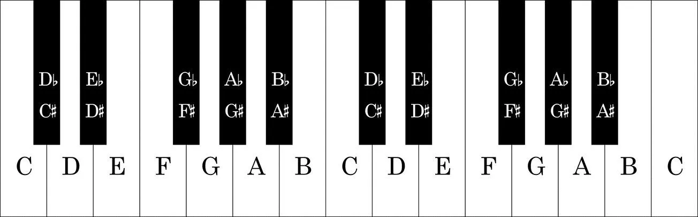
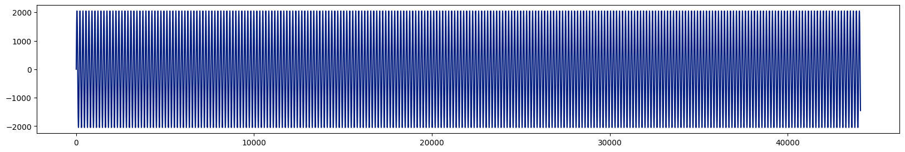
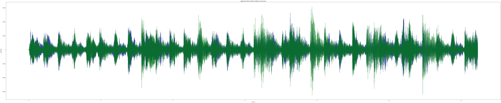
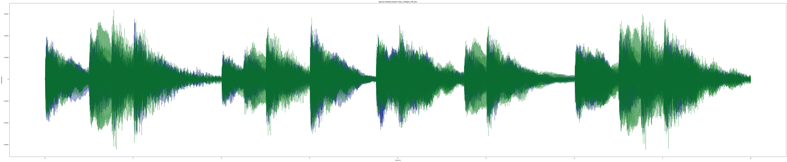
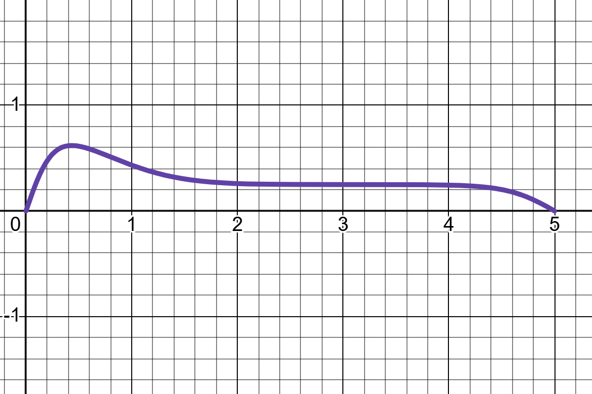
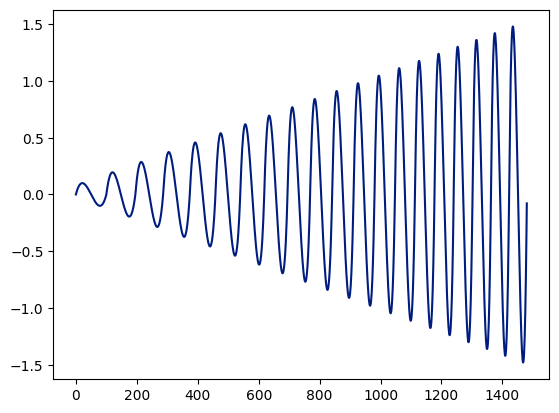
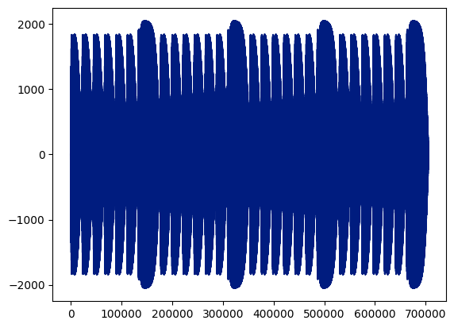
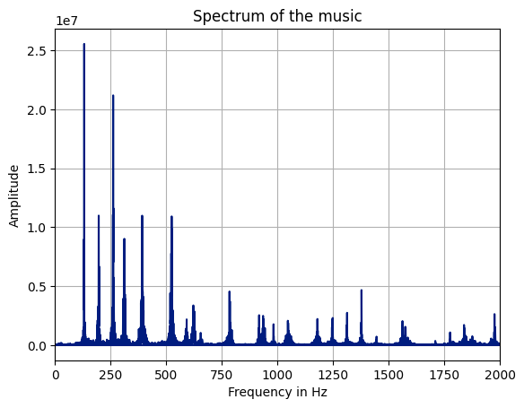
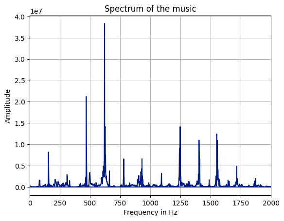

The Blog aims in making a python programme to create a basic Digital Audio Workstation(DAW), which should in the end create a platform for you to build on. The blog doesn't follow any standard steps in creating a professional (DAW), which may use more complex graphical aids that we omit here. We'll first go through some basics of music theory, go on making codes to create waves where we decide their looks, of course trying to approximate nature. The result will then be made possible to be heard. Here's the output of a bonus code that you'l get at the end of the blog.
What and why music?
"Music is a moral law. It gives soul to the universe, wings to the mind, flight to the imagination, and charm and gaiety to life and to everything."
-Plato
Music is the feeling of mind to sway with the vibrating ear drum, or the advantage to sense periodic disturbances in air pressure. It is the periodic changes in pressure that is percieved as music. The word 'music' is derived from the greek word mousiké literally meaning "art of the Muses"(wikipedia said that). In creating music with code, we are to ignore whatever comes after the eardrum. Left with just the variation in pressure that forms a wave, we say it's made up of many sine and cosine waves and go on trying to create it. And this is possible due to Fourier's theorem. If asked what is the use of making music with a computer programme, we recall that a person may not be able to play piano, violin, drums, and boast his abilities all at the same time. Atleast not so easily. We feel the tones to be pleasing when the wave associated is simple. As a rule of thumbs, it not possible to eradicate all complex and noisy sound when performing music. This is where we have the advantage.

There are 7 musical Alphabets which consists of A, B, C, D, E, F, G and produces the 12 notes A, A#/B♭, B, C, C#/D♭, D, D#/E♭, E, F, F#/G♭, G, G#/A♭ which is the building block of all music.
An interval is the difference between two notes. The interval between a note and a note double the frequency is an octave
Music is created when sounds of certain pitches are played considering a rhythm.Pitch can be considered as the scale in which sound is percieved by us. Human preception of sound is linearly proportional to pitch, But sadly is not in linear relation to frequency. We Therefore are concerned in finding their relation. Convention says that an octave consists of 12 notes. Let The frequency of C4(the note of C in the 4th octave) be known. Then Frequency of C5 can be calculated as (frequency of C4)2. So, to get the in between Frequencies, (frequency of C4)(2)^((n-k)/12). $$f(x) = \left(2^{\frac{1}{12}}\right)^{n-49} \times 440 \text{ Hz}$$ For our purpose we take k to be 49 so that C4 comes in the desired position. For in Depth details on music theory the following sites would be helpful for the interested. How Music Works iconcollective
Getting Ready
We use Python to do the coding. So before we do the programming part, we have to make sure some packages are installed in your python environment. You can do that easily by going to the terminal and entering "pip install [the package name]" with the name of the package instead of [the package name].
Make a function that gives the frequencies given the pitch or the notes
import numpy as np
def get_piano_notes():
# White keys are in Uppercase and black keys (sharps) are in lowercase
octave = ['C', 'c', 'D', 'd', 'E', 'F', 'f', 'G', 'g', 'A', 'a', 'B']
base_freq = 440 #Frequency of Note A4
keys = np.array([x+str(y) for y in range(0,9) for x in octave])
# Trim to standard 88 keys
start = np.where(keys == 'A0')[0][0]
end = np.where(keys == 'C8')[0][0]
keys = keys[start:end+1]
note_freqs = dict(zip(keys, [2**((n+1-49)/12)*base_freq for n in range(len(keys))]))
note_freqs[''] = 0.0 # stop
return note_freqs
def get_sine_wave(frequency, duration, sample_rate=44100, amplitude=4096):
t = np.linspace(0, duration, int(sample_rate*duration)) # Time axis
wave = amplitude*np.sin(2*np.pi*frequency*t)
return wave
Here an array of numbers are created, That contains the data proportional to the voltage that will be sent to some speaker via a digital-to-analog converter that the committed audio player in most of the graphical devices will do for us. which when plotted looks like:
# Get middle C frequency
note_freqs = get_piano_notes()
frequency = note_freqs['C4']
# Get the sine wave
sine_wave = get_sine_wave(frequency, duration=1, amplitude=2048)
#write it to a file
wavfile.write('pure_c.wav', rate=44100, data=sine_wave.astype(np.int16))
#Plot it
plt.figure(figsize=(20,3))
plt.plot(sine_wave)
plt.show()
looks like this:

The plotted data is also saved in the root folder where your folder is stored as a .wav file, from which, opening in a audio reader app, You should be able to hear a not that good piano sound.But why?, we'll do some analysis to find out.But before that there is something to understand a bit.
Why a specific sample rate?
If we look back at the 'get_sine_wave' function, we see that sample_rate has a value of 44100, which is not just a random number. Nyquist–Shannon sampling theorem which states that sample rate must be at least twice the bandwidth of the signal to avoid aliasing(in wikipedia terms). which simply means that atleast 2 data points should come inside a wave. as the audible frequency limit of human hearing is 20000Hz, more than 40000Hz is ok for sample rate. The specific rate is concerned with some history.
why .wav files can also be a good question. Usually audio files are stored in .mp3 files etc that uses lossy compression to reduce data size, but is hard to encode and decode for our purpose. while .wav files are uncompressed and easy to handle.
Get motivation from nature
Let's look at some natural sounds, Taken from Sample Focus


From these, it can be seen that each tone that is applied has a generic shape to the amplitude that differs with the instrument, which is called it's envelope. these envelopes have a defined shape for each instruments. Wikipedia tells us that the most common of these has four parameters: attack, decay, sustain and release (ADSR).
The next obvious parameter to play with would be the frequencies of waves asociated with the notes. For that a little understanding of Fourier Transform would be needed. We'll get back to it later, now let's go with what we know now and compare changes.
Create an amplitude profile
Playing with some sigmoid and guassian functions leave us with a trusty function that can do this job and, of course under some limitations wchich i leave you to identify. Here's the Desmos link for the same.

Make the wave
We have the Amplitude profine now, but how to make the waves with such a property?. It Seems nearly imposible to make non-piecewise functions of this property. So.. we try gluing up some polynomials to do our job.
def create_wave(t, sample_rate, f = lambda x : 10, A = lambda x : 1, prolix = False):
# Frequency shouldn't be zero at any distance(disy) from the initial point.(f be a +ve non zero function with domain 0<=x<inf)
# let prolix = True for getting the values at runtime (usful for debugging purposes)
# Amplitude should be +ve always(A be a +ve function)
# Here we divide the data into small regions with a wavelength, amplitude accociated with it.
wavelength_at_freq = [0]#the length of a single custom wave at a specific freq measured at beginning of the wavelength
amplitude_at_wavelength = [0]#the amplitude at beginning of the wavelength
dist = 0
while(1):
wavelength = 1/f(dist) # find the wavelength given the frequency function
wavelength_at_freq.append(wavelength)
amplitude_at_wavelength.append(A(dist))
dist += wavelength
if(dist > t):
break
wave_beginnings = [0]
for i in wavelength_at_freq:
wave_beginnings.append(wave_beginnings[-1] + i)
# to make everything aligned##
wavelength_at_freq = wavelength_at_freq[1:]
amplitude_at_wavelength = amplitude_at_wavelength[2:]
wave_beginnings = wave_beginnings[1:]
##############################
samples = int(np.floor(t*sample_rate))# the thing that comes inside range() should be an integer
wave_arr_index = 0
data = []
for i in range(samples):
val_determining_x = i/sample_rate - wave_beginnings[wave_arr_index]
if val_determining_x > wavelength_at_freq[wave_arr_index]:
wave_arr_index += 1
val_determining_x = i/sample_rate - wave_beginnings[wave_arr_index]
if wave_arr_index >= len(wavelength_at_freq)-1:
break
val_determining_x = wavelength_at_freq[wave_arr_index]-val_determining_x
val = return_cust_wave_seg(val_determining_x, 0, wavelength_at_freq[wave_arr_index]/2, amplitude_at_wavelength[wave_arr_index])
data.append(val)
if prolix:
print("###########################")
print("wavelength_at_freq = ", wavelength_at_freq)
print("amplitude_at_wavelength = ", amplitude_at_wavelength)
print("wave_beginnings = ", wave_beginnings)
print("samples = ", samples)
print("data = ", data)
return data
The above code creates the wave that we need. What the above code does is just place the poynomial side by side each having a given amplitude and frquency. Let's Try it out: python plt.plot(create_wave(1.5, 1000, f = lambda x : 5*x+10, A = lambda x : x))

and for comparison to the previosly created sine wave, here's the new approx sine wave
Now applying the previously found amplitude profile
def ret_piano_key(sample_rate,flatten , attack, keyoff, sustain, freq, Amp):
f = lambda x: (np.exp(-(x*flatten)**2)+0.5)*(1/(1+np.exp(-attack*(x*flatten)))-1/(1+np.exp(-keyoff*((x*flatten)-sustain*flatten)))-0.5)*4*Amp
D = create_wave(sustain, sample_rate, f = lambda x : freq, A = f)
return D
def return_timeline(sample_rate, notes, max_Amp, prolix=False, prolix2=True):
#notes are divided into sections which denote the instrument(Eg: piano, violin, guitar1, guitar2 etc)
#each section is a multidimensional array containing rows with the frequencies as certain codes or numbers
#consequently and followed by the time it should be sustained
#followed by a row, the time at which the note should be made to start after the beginning of the last note
#Thelast row of
#the last row denoting the name of instrument
note_freqs = get_piano_notes()
#################### Find the total time the music should be played
max_real_time = 0
for section in notes:
if section[-1][0] == "piano":
real_time = sum(section[2]) + section[1][-1]
if section [-1][0] == "violin":
real_time = sum(section[1])
if max_real_time < real_time:
max_real_time = real_time
time = max_real_time*sample_rate
if prolix:
print("length = ", max_real_time, " seconds")
#####################
timeline = np.zeros(int(time)) # A base for the music to run on
for section in notes:
if section[-1][0] == "piano":
note_begin = [0]
for i in section[2][1:]:
note_begin.append(i + note_begin[-1])
for note, interval, t_begin in zip(section[0], section[1], note_begin):
if note != "-":
key = ret_piano_key(sample_rate,20, 1.2, 0.5, interval, note_freqs[note], 1)
note_begin_time = int(t_begin*sample_rate)
for i in range(len(key)):
timeline[note_begin_time + i] += key[i]
if section [-1][0] == "violin":
pass
max_timeline = np.max(timeline)
if max_timeline > 0:
timeline = timeline/max_timeline*max_Amp
else:
print("Timeline Empty")
return timeline
With the above codes a simple music shoulde be easy to produce.
notes = [
#Piano1
[
["C4", "C4", "G4", "G4", "A4", "A4", "G4", "F4", "F4", "E4", "E4", "D4", "D4", "C4", "G4", "G4", "F4", "F4", "E4", "E4", "D4", "G4", "G4", "F4", "F4", "E4", "E4", "D4"], # note
[ 0.5, 0.5, 0.5, 0.5, 0.5, 0.5, 1.0, 0.5, 0.5, 0.5, 0.5, 0.5, 0.5, 1.0, 0.5, 0.5, 0.5, 0.5, 0.5, 0.5, 1.0, 0.5, 0.5, 0.5, 0.5, 0.5, 0.5, 1.0], # time the note should be sustained
[ 0, 0.5, 0.5, 0.5, 0.5, 0.5, 0.5, 1.0, 0.5, 0.5, 0.5, 0.5, 0.5, 0.5, 1.0, 0.5, 0.5, 0.5, 0.5, 0.5, 0.5, 1.0, 0.5, 0.5, 0.5, 0.5, 0.5, 0.5], # time at which the note begins after the beginning of last note
["piano"]
],
]
res = return_timeline(44100, notes, 2048)
plt.plot(res)

Using Fourier Transform to find the properties of sound
The piano note we made just uses a single frequency, but is it true in real sounds?
sample_rate, data = wavfile.read('piano_chord_C_minor.wav')
#FFT
dat = data[:, 0] #Left ear
t = np.arange(dat.shape[0])
freq = np.fft.fftfreq(t.shape[-1])*sample_rate
sp = np.fft.fft(dat)
# Plot spectrum
plt.plot(freq, abs(sp.real))
plt.xlabel('Frequency in Hz')
plt.ylabel('Amplitude')
plt.title('Spectrum of the music')
plt.xlim((0, 2000))
plt.grid()
using the above code the weightage of the sine waves of which frequency the sounds are created can be visualised. Taking the previous 'natural sounds', we get image1


we see that there are multiple places where there is a peak in frequency, Trying to add the effect.The effect is similar to giing weightage to adgacent notes that differ by an octave, which is similar to an Octave effect. The following code can also be exploited to give weightage to notes differing by any interval.
def return_timelinee(sample_rate, notes, max_Amp, prolix=False, prolix2=True):
#notes are divided into sections which denote the instrument(Eg: piano, violin, guitar1, guitar2 etc)
#each section is a multidimensional array containing rows with the frequencies as certain codes or numbers
#consequently and followed by the time it should be sustained
#followed by a row, the time at which the note should be made to start after the beginning of the last note
#Thelast row of
#the last row denoting the name of instrument
note_freqs = get_piano_notes()
#################### Find the total time the music should be played
max_real_time = 0
for section in notes:
if section[-1][0] == "piano":
real_time = sum(section[2]) + section[1][-1]
if section [-1][0] == "violin":
real_time = sum(section[1])
if max_real_time %lt real_time:
max_real_time = real_time
time = max_real_time*sample_rate
if prolix:
print("length = ", max_real_time, " seconds")
#####################
timeline = np.zeros(int(time)) # A base for the music to run on
for section in notes:
if section[-1][0] == "piano":
note_begin = [0]
for i in section[2][1:]:
note_begin.append(i + note_begin[-1])
for note, interval, t_begin in zip(section[0], section[1], note_begin):
if note != "-":
key = np.array(ret_piano_key(sample_rate,20, 1.2, 0.5, interval, note_freqs[note], 1))
key_length = len(key)
for k in section[3]:
key2 = np.array(ret_piano_key(sample_rate,20, 1.2, 0.5, interval, note_freqs[note]*2**(k), 1))*section[4][0](k)
key2_length = len(key2)
if key2_length == key_length:
key += key2
elif key2_length > key_length:
key = np.append(key, np.zeros(key2_length-key_length)) + key2
key_length += key2_length-key_length
else:
key += np.append(key2, np.zeros(key_length-key2_length))
note_begin_time = int(t_begin*sample_rate)
for i in range(len(key)):
timeline[note_begin_time + i] += key[i]
if section [-1][0] == "violin":
pass
max_timeline = np.max(timeline)
if max_timeline > 0:
timeline = timeline/max_timeline*max_Amp
else:
print("Timeline Empty")
return timeline
the change in sound can be easily noted. The final Twinkile Twinkle would sound like
Bonus (DAW with violin, piano, frequency and amplitude plots)
The difference between violin and piano is that piano is restricted o produce sounds with fixed frquencies, but violin has the freedom to play any frequency in any interval, but can only play one tone at a time.
for moving in between frequencies in any manner, one way would be to use bezier curves, that, given the slopes of two points, a smooth curve can be drawn connecting both the points with the slopes at the points being the ones given. For making familiar the use of occipital lobe for seeing music, I have also made a way to visualise the frequecy and amplitude graph of the music, which will come handy when composing.
Here is the desmos page for the bezier curves used in the code below.
def Bezier_validation(xi, xf, yi, yf, i_slope, f_slope):
line_slope = (yf-yi)/(xf-xi)
if (i_slope < line_slope and f_slope < line_slope):
return "False, incr either i or f"
if (i_slope > line_slope and f_slope > line_slope):
return "False, dcr either i or f"
if (i_slope == line_slope) and (f_slope == line_slope):
return "True. and is a line"
return "True"
def ret_Bezier(xi, xf, yi, yf, i_slope, f_slope, x):
#print("Bezier validation: ", Bezier_validation(xi, xf, yi, yf, i_slope, f_slope, x))
if i_slope*f_slope > 0:
return x*0
xp = (yf-yi-f_slope*xf+i_slope*xi)/(i_slope - f_slope)
yp = yi - i_slope*(xi-xp)
t = (xi-xp+np.sqrt(xp**2-xf*xi+(xi-2*xp+xf)*x))/(xi-2*xp+xf)
y = t**2*(yi-2*yp+yf)+2*t*(yp-yi)+yi
return y
def ret_Bezier_wave(x_part, sample_rate, freq_yi, freq_yf, freq_i_slope, freq_f_slope, amp_yi, amp_yf, amp_i_slope, amp_f_slope):
f_freq = lambda x: ret_Bezier(0, x_part, freq_yi, freq_yf, freq_i_slope, freq_f_slope, x)
f_amp = lambda x : ret_Bezier(0, x_part, amp_yi, amp_yf, amp_i_slope, amp_f_slope, x)
D = create_wave(x_part, sample_rate, f = f_freq, A = f_amp )
return D
def return_timeline_new_interactive(sample_rate, notes, max_Amp, prolix=False, prolix2=True):
#notes are divided into sections which denote the instrument(Eg: piano, violin, guitar1, guitar2 etc)
#each section is a multidimensional array containing rows with the frequencies as certain codes or numbers
#consequently and followed by the time it should be sustained
#followed by a row, the time at which the note should be made to start after the beginning of the last note
#Thelast row of
#the last row denoting the name of instrument
note_freqs = get_piano_notes()
#################### Find the total time the music should be played
max_real_time = 0
for section in notes:
if section[-1][0] == "piano":
real_time = sum(section[2]) + section[1][-1]
if section [-1][0] == "violin":
real_time = sum(section[1])
if max_real_time < real_time:
max_real_time = real_time
time = max_real_time*sample_rate
if prolix:
print("length = ", max_real_time, " seconds")
#####################
timeline = np.zeros(int(time)) # A base for the music to run on
freq_envelope = []
amp_envelope = []
for section in notes:
freq_env_x = []
freq_env_y = []
amp_env_x = []
amp_env_y = []
if section[-1][0] == "piano":
amplitude = False
if len(section) == 6:
amplitude = True
note_begin = [0]
for i in section[2][1:]:
note_begin.append(i + note_begin[-1])
for note, interval, t_begin, i in zip(section[0], section[1], note_begin, range(len(section[0]))):
if note != "-":
if amplitude == True:
key = np.array(ret_piano_key(sample_rate,20, 1.2, 0.5, interval, note_freqs[note], section[4][i]))
key_length = len(key)
for k in section[3]:
key2 = np.array(ret_piano_key(sample_rate,20, 1.2, 0.5, interval, note_freqs[note]*2**(k), 1))*section[5][0](k)
key2_length = len(key2)
if key2_length == key_length:
key += key2
elif key2_length > key_length:
key = np.append(key, np.zeros(key2_length-key_length)) + key2
key_length += key2_length-key_length
else:
key += np.append(key2, np.zeros(key_length-key2_length))
amp_env_y.append(section[3][i])
amp_env_y.append(section[3][i])
amp_env_x.append(t_begin)
amp_env_x.append(t_begin + interval)
else:
key = np.array(ret_piano_key(sample_rate,20, 1.2, 0.5, interval, note_freqs[note], 1))
key_length = len(key)
for k in section[3]:
key2 = np.array(ret_piano_key(sample_rate,20, 1.2, 0.5, interval, note_freqs[note]*2**(k), 1))*section[4][0](k)
key2_length = len(key2)
if key2_length == key_length:
key += key2
elif key2_length > key_length:
key = np.append(key, np.zeros(key2_length-key_length)) + key2
key_length += key2_length-key_length
else:
key += np.append(key2, np.zeros(key_length-key2_length))
note_begin_time = int(t_begin*sample_rate)
freq_env_y.append(note_freqs[note])
freq_env_y.append(note_freqs[note])
freq_env_x.append(t_begin)
freq_env_x.append(t_begin + interval)
for i in range(len(key)):
timeline[note_begin_time + i] += key[i]*section[-2][0]
freq_envelope.append([freq_env_x, freq_env_y, 'piano'])
amp_envelope.append([amp_env_x, amp_env_y, 'piano'])
if section [-1][0] == "violin":
for i in range(len(section[0])):
if type(section[0][i]) == str:
section[0][i] = note_freqs[section[0][i]] #convert to frequency if text
if type(section[4][i]) == str:
section[4][i] = note_freqs[section[4][i]] #convert to frequency if text
if prolix:
print(section)
#timeline = np.zeros(int((t_stamp[-1])*sample_rate))
begin_time_stamp=0
freq_env = []
amp_env = []
for i in range(1, len(section[0])):
if prolix:
print("############ i = ", i)
print("values = ",section[1][i], sample_rate, section[4][i-1], section[4][i], section[6][i-1], section[5][i], section[0][i-1], section[0][i], section[3][i-1], section[2][i], sep = ", ")
stroke = ret_Bezier_wave(section[1][i], sample_rate, section[4][i-1], section[4][i], section[6][i-1], section[5][i], section[0][i-1], section[0][i], section[3][i-1], section[2][i])
freq_env_func = lambda x : ret_Bezier(0, section[1][i], section[4][i-1], section[4][i], section[6][i-1], section[5][i], x)
amp_env_func = lambda x : ret_Bezier(0, section[1][i], section[0][i-1], section[0][i], section[3][i-1], section[2][i], x)
bezier_validated_freq = Bezier_validation(0, section[1][i], section[4][i-1], section[4][i], section[6][i-1], section[5][i])
bezier_validated_amp = Bezier_validation(0, section[1][i], section[0][i-1], section[0][i], section[3][i-1], section[2][i])
if prolix2 and (("False" in bezier_validated_freq)):# or ("False" in bezier_validated_amp)):
print("############ i = ", i)
print("section no : ")
print("values = ",section[1][i], sample_rate, section[4][i-1], section[4][i], section[6][i-1], section[5][i], section[0][i-1], section[0][i], section[3][i-1], section[2][i], sep = ", ")
print("Bezier validation: for freq ", bezier_validated_freq)
print("Bezier validation: for amp ", bezier_validated_amp )
for j in range(len(stroke)):
if prolix:
if j == 0:
print("j=0 :", int(t_stamp[i-1]*sample_rate) + j)
if j == len(stroke)-1:
print("j=end :", int(t_stamp[i-1]*sample_rate) + j)
timeline[int(begin_time_stamp) + j] += stroke[j]*section[-2][0]
freq_env.append(freq_env_func(section[1][i]*j/len(stroke)))
amp_env.append(amp_env_func(section[1][i]*j/len(stroke)))
begin_time_stamp += len(stroke)
freq_envelope.append([freq_env, 'violin'])
amp_envelope.append([amp_env, 'violin'])
for i in range(len(notes)):
if notes[i][-1][0] == 'piano':
fig, ax = plt.subplots(1, 2)
fig.set_figwidth(15)
ax[0].plot(freq_envelope[i][0], freq_envelope[i][1], '-ob')
ax[0].set_xlim([0, max_real_time])
ax[0].set_title('piano frequency')
ax[1].plot(amp_envelope[i][0], amp_envelope[i][1], '-g')
ax[1].set_xlim([0, max_real_time])
ax[1].set_title('piano Amplitude')
plt.show()
elif notes[i][-1][0] == 'violin':
fig, ax = plt.subplots(1, 2)
fig.set_figwidth(15)
ax[0].plot(np.arange(0,len(freq_envelope[i][0]))/sample_rate, freq_envelope[i][0], '-b')
ax[0].set_xlim([0, max_real_time])
ax[0].set_title('violin frequency')
ax[1].plot(np.arange(0,len(amp_envelope[i][0]))/sample_rate, amp_envelope[i][0], '-g')
ax[1].set_xlim([0, max_real_time])
ax[1].set_title('violin amplitude')
plt.show()
max_timeline = np.max(timeline)
if max_timeline > 0:
timeline = timeline/max_timeline*max_Amp
else:
print("Timeline Empty")
return timeline, freq_envelope
The code can be updated to make music realistic, or as you wish. An example would be to add 'vibrato' into it by using a sine wave as the frequency function.
Here is an example using the the violin part.